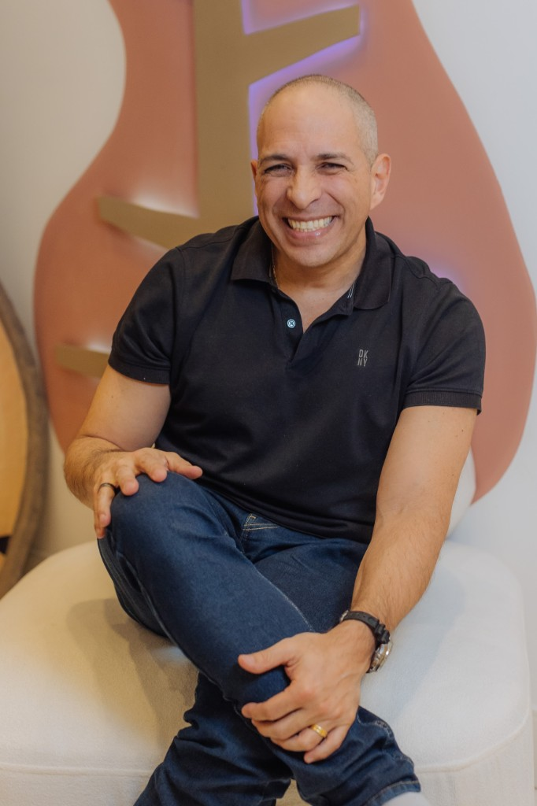

Credibilidade
Quem está
por trás.

Product designer com mais de 20 anos de experiência em plataformas, sistemas e produtos digitais, com passagem por Nike, Meta e Esri. Prepara sistemas complexos para alimentar a IA com dados e fluxos confiáveis.

Formação internacional pela University of the Arts London. Especialista em sistemas de design, estratégia de marca e design de interface. Criadora do método Neuro Affective Design.

Adriano Conrado
CCO, Chief Clinical Officer
LinkedInTerapeuta ocupacional especialista em neurodesenvolvimento e operações clínicas. Ex-vice-presidente do CREFITO-3. Responsável pela arquitetura operacional e validação técnica das jornadas de cuidado.
Engenheiro de Software com trajetória em IKEA, Loggi e QuintoAndar. Especialista em sistemas de larga escala e IA Generativa, lidera a visão tecnológica com foco em arquiteturas modernas e escaláveis.
Nascemos da Clínica Casa do Urso, em São Paulo. 100+ famílias atendidas. Dados clínicos estruturados desde 2023.